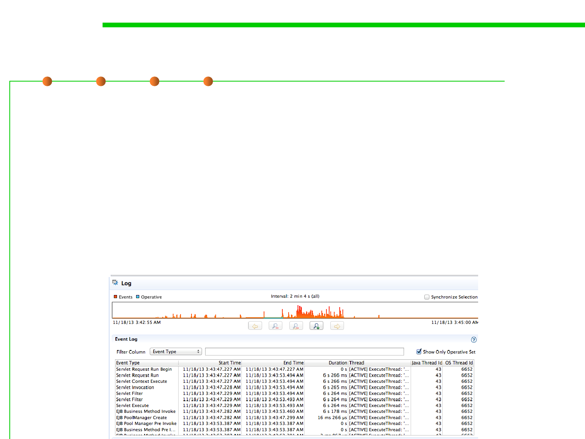

1.1 Multi-Dimensional Views of Software Construction
(8) Run-time, period, and component-level view
▪ Event logging provides system administrators with information
useful for diagnostics and auditing. 事件日志
– The different classes of events that will be logged, as well as what details
will appear in the event messages, are considered in development cycle.
▪ Each class of event to be assigned a unique "code“ to format and
output a human-readable message.
– This facilitates localization and allows system administrators to more
easily obtain information on problems that occur.